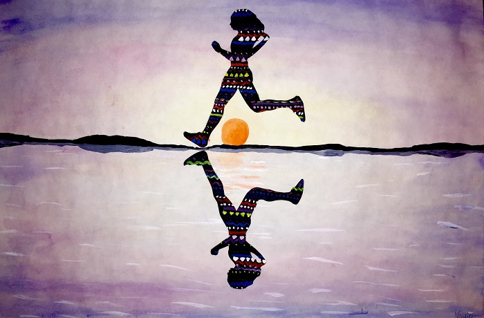
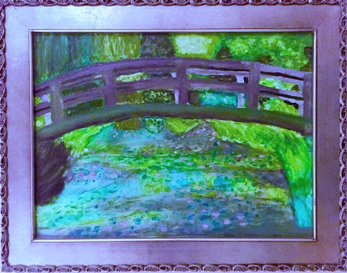
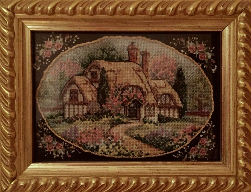

Art

Family History Painting // oil on canvas.
In the middle is my family crest. The right represents our Armenian and Polish heritage, whereas the left represents our life in the United States, in Virginia. Painted for my father.
Bob Ross Night // acryllic on canvas.
Painted during a "Bob Ross Night" with my friends...fastest piece of art I've ever made, and one of my favorites.
I was so happy it turned out well that I immediately gave it away to my friend.

UVA Rotunda // watercolor on paper.
The central building of the University of Virginia, built by Thomas Jefferson and now a UNESCO world heritage site. Painted as a birthday present for one of my friends.
Tiger // pencil on paper (left) and watercolor on paper (right).
In honor of my favorite animal :)
Elephant // pen on paper.
Street in Europe // oil on canvas.
European buildings and streets are my favorite subject for paintings. The perspective is a bit off, but I was in 8th grade.
Rose // acryllic on wood.
A birthday present for my mother.
VA Festival of the Book // watercolor on cutout paper.
Second place poster for the Virginia Festival of the Book, complete with my misspelled name.

Runner // watercolor on cutout paper.
Trying to portray the freedom that a runner feels.

Water Lilies and Japanese Bridge // watercolor on canvas (yikes).
For a 6th grade project I researched Claude Monet and recreated his painting...with watercolor because that was all I had at the time. Monet is still my favorite painter.
Ruines au bord d'une rivière // watercolor on paper (left) and engraving on ivory (right).
Copied an engraving, using watercolor to mimic the engraving's transparency.
Biblical Scenes // pen on paper.
Conflicts and key symbols from the Old Testament.

In Her Garden // print on paper, colored in with acryllic (left) and printed on map (right).
Carved out this design and printed it many times, on the left was filled in with paint while on the right was printed on a map of Philadelphia, as a gift for my grandmother who lived there at the time.

The Cottage // cross stitch.
Took longer than I would care to admit...
Girl Figurine // porcelain clay.
Cicada // pencil on paper (left) and paper cutout (right).
Flower // porcelain clay.
Model // pencil on paper.
Emma // pencil on paper.
My first year roommate with her dog. I no longer have the original photo, but it was the closest resemblance I have ever achieved with a portrait.
Jar // pencil on paper.
Practicing still lifes.
Lauren // colored pencil on paper.
One of my best friends from high school. I drew this portrait for her 16th birthday.
Reverse-Engineered Drone // pencil on paper.
For an engineering project to "reverse engineer" an object, my group took apart a drone to understand how it worked. This was my rendition of all the parts of the drone system.